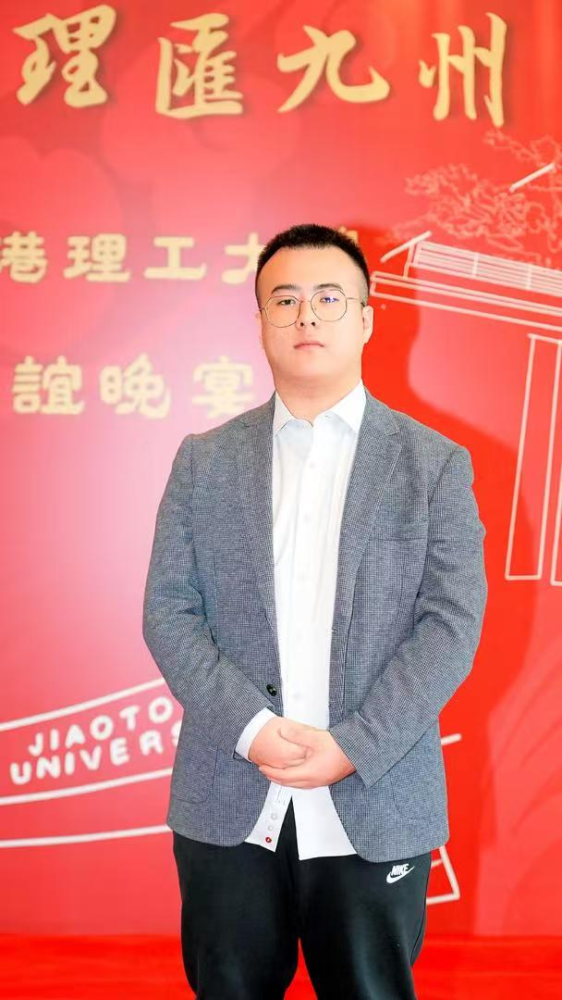
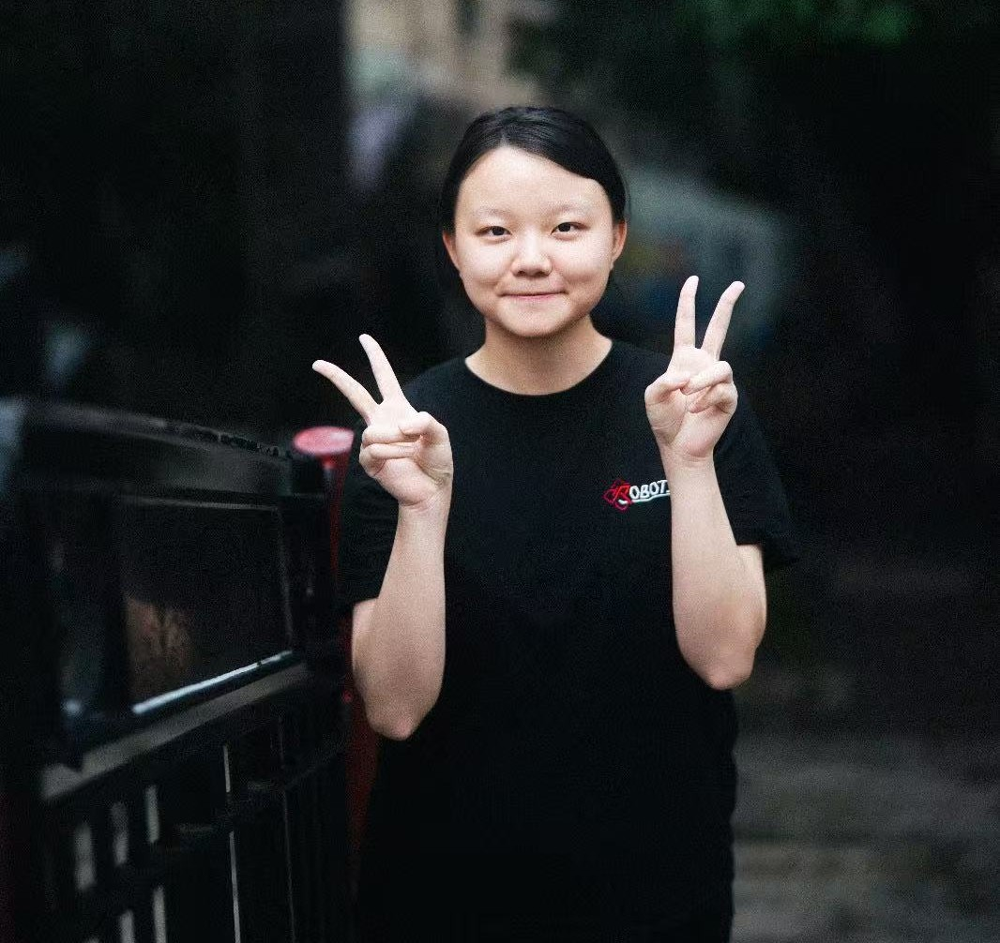
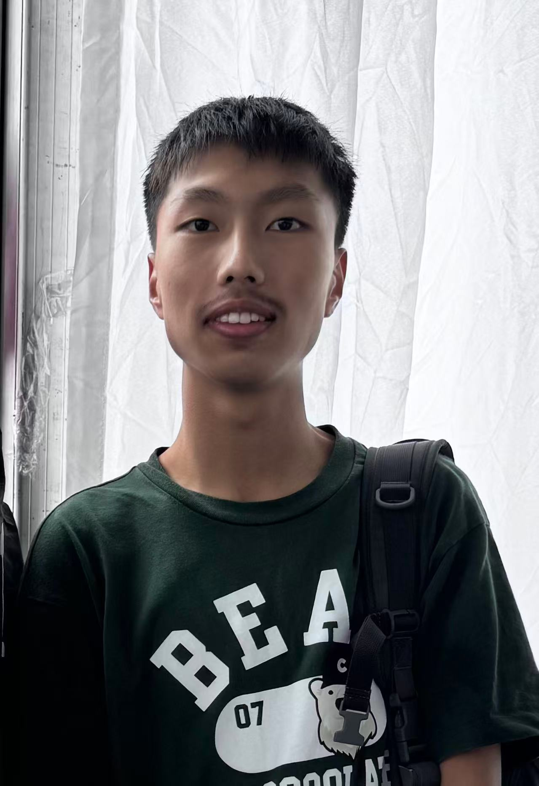

Faculty Advisor
Professor Wen Weisong
TAS LAB Principal InvestigatorProvides academic direction, research-aligned guidance, and strategic support for student robotics projects.
Team
The club brings together student leaders, technical groups, faculty supervision, and postgraduate mentors to support learning, projects, and competition preparation.
Supervision Team
Faculty and postgraduate mentors help connect club activities with research practice, engineering standards, and responsible technical growth.
Provides academic direction, research-aligned guidance, and strategic support for student robotics projects.
Supports research mentoring and connects student robotics work with trustworthy autonomous systems practice.
Supports club members in robotics, mapping, localization, sensor fusion, and project development.
Supports UAV, mapping, localization, sensor fusion, and GNSS-related technical exploration.

Supports UAV positioning, navigation, and practical autonomous-system learning.
Supports FPGA hardware acceleration and system-level technical discussion.
Team Members
Student leaders coordinate club planning, technical execution, communications, electronics work, and computer science development.

Fong Chun Kin
Direction & CoordinationLeads the student team, coordinates yearly goals, represents the club, and keeps project and member development moving together.

Lin Jirath
Projects & IntegrationCoordinates technical tracks, project milestones, documentation, and system testing.

Su Zeyu
Communication & OperationsSupports meeting records, member communication, event logistics, and activity updates.

Ma Bingxu
Hardware & ControlLeads electronics, embedded systems, sensors, actuators, wiring, and hardware debugging work.

Sun Yinlan
Software & AI SystemsLeads software, perception, AI workflows, simulation, integration tooling, and code quality.
Technical Groups
Each group can publish projects, tutorials, meeting notes, and technical outcomes over time.
CAD, structure, parts, mounting, fabrication planning, and mechanical integration.
Embedded systems, sensors, actuators, power, wiring, and control loops.
Vision, SLAM, learning algorithms, sensor fusion, and data workflows.
Programming, simulation, autonomy logic, integration tooling, and testing.

Advisors & Partners
Faculty supervision, postgraduate mentoring, supporting labs, sponsors, and collaboration partners help the club create meaningful opportunities for student builders.